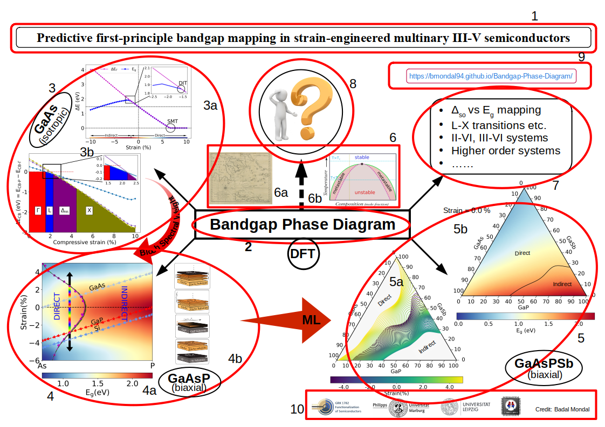

1 / 3

2 / 3

3 / 3

For the introduction to bandgap phase diagram (BPD) concept please refer to (work in progress). The main idea behind BPD is to understand the variation of the Direct-Indirect Transition (DIT) points with composition using the concept of band unfolding (1, 2) and Bloch spectral density (3, 4, 5) which ultimately give rise to DIT line/curve that as if, separates the nature of bandgap into two phases: direct and indirect. Please contact to the below contact addresses for further details.
"""
Me: I want to grow this. Can you please grow this for me?
CPD: Yeahhhhhhhhhh! Hmmmmmmmmmm!
BPD: Hey! Why do you wanna grow this?
Me: I need a device like .... And I thoght this probably will work if I can grow this.
BPD: Are you sure this will work as you want?
Me: Nah! (after 2 days: Nope! It doesn't work. But we are going close. Let's try next one.)
BPD: Wait. Don't waste your time and money. It seems to me this is not the right choice. Use here .... This will be the best option.
.
.
.
Me: Wow. Thanks to both of you.
"""
If you want to contribute to this project please refer to my GitHub page . Link
Still work in progress. Please contact to the below contact details until then.
For further comments and suggestions please email to email id.
As of 2021-2022: This project was performed by Badal Mondal as a part of the DFG-Research Training Group "Functionalization of Semiconductors" (GRK 1782) under the supervision of Prof. Dr. Ralf Tonner-Zech. We are extremely thankful to Goethe-HLR Frankfurt, ZIH TU Dresden and HLR Stuttgart for providing the necessary computational resources.
This page is created (22.09.2021) and maintained by Badal Mondal. If the results in this page are useful to you we will consider our efforts successful. We will highly appreciate if you cite the above references and this page, if you use the results from this page.